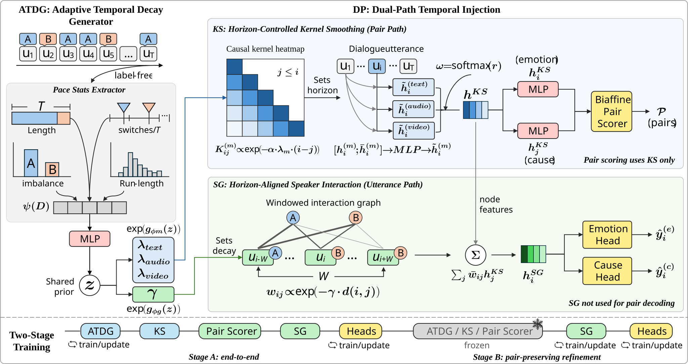
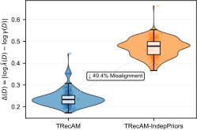
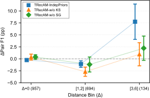
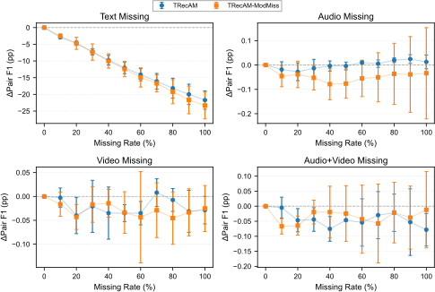
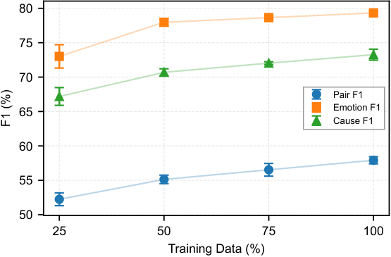
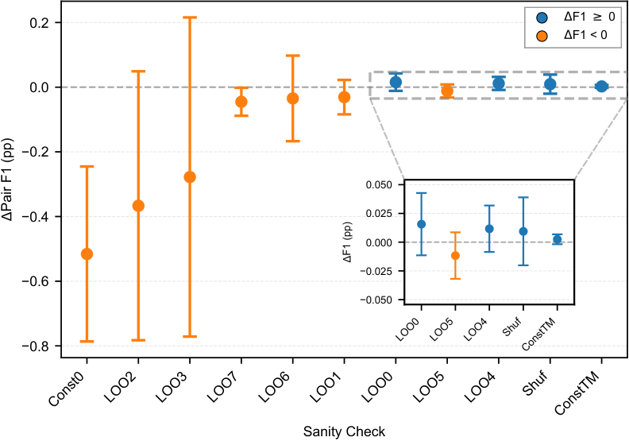
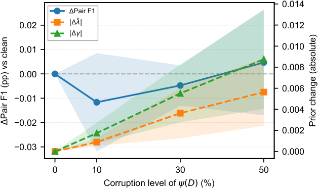

Dialogue-paced temporal scale
Label-free dialogue pace statistics are turned into a dialogue-level timescale instead of relying on a fixed temporal bias shared across all conversations.
Implemented extractor
PaceExt is the strongest public-facing PaceVer component today. It keeps MECPE as a structured pair extraction problem while aligning temporal priors across modules instead of letting each module learn incompatible recency behavior.
In the paper-facing manuscript this layer appears under the ATDG + DP and TRecAM naming. At the thesis level it is the extractor foundation that later feeds BridgeProt and ReaVer.
Core Design
Label-free dialogue pace statistics are turned into a dialogue-level timescale instead of relying on a fixed temporal bias shared across all conversations.
Sequential aggregation and speaker interaction receive one coordinated temporal prior so that the modules do not drift into inconsistent recency assumptions.
A pair-preserving two-stage schedule prevents the structured link objective from being destabilized by the auxiliary multi-task heads.
Architecture
Modular MECPE systems often mix long-range sequential smoothing with local interaction graphs. PaceExt treats the inconsistency between those temporal views as a first-order modeling issue rather than a side effect to ignore.
PaceVer does not replace the extractor with a fully generative system. The extractor remains the anchor layer, and later pages on this site build on top of it.

Results
These are the results currently surfaced on the public site because the extractor is the most mature PaceVer component. The naming in the table matches the paper-facing manuscript.
Selected pair extraction results from the full multimodal setting reported in the thesis.
| Method | Modalities | Pair Precision | Pair Recall | Pair F1 |
|---|---|---|---|---|
| MECPE-2steps | Audio + Video | 57.47 | 49.81 | 53.20 |
| HiLo | Audio + Video | 51.78 | 59.69 | 55.45 |
| ATDG + DP (PaceExt) | Text-only | 53.12 | 61.22 | 56.88 |
| ATDG + DP (PaceExt) | Audio + Video | 52.16 | 65.12 | 57.92 |
Naming note: the extractor is referred to as ATDG + DP / TRecAM in the current paper manuscript and as PaceExt in the thesis-level project structure.
The paper reports not only pair scores but also emotion-turn and cause-turn F1 across text-only and multimodal settings.
| Setting | Emotion F1 | Cause F1 | Pair Precision | Pair Recall | Pair F1 |
|---|---|---|---|---|---|
| Text-only | 79.04 ± 0.12 | 73.23 ± 0.24 | 53.12 ± 0.89 | 61.22 ± 0.56 | 56.88 ± 0.50 |
| + Audio | 79.40 ± 0.42 | 73.19 ± 0.59 | 52.40 ± 2.86 | 62.45 ± 4.29 | 56.86 ± 1.05 |
| + Video | 79.00 ± 0.23 | 72.77 ± 0.80 | 52.85 ± 2.35 | 62.19 ± 2.59 | 57.07 ± 0.74 |
| + Audio + Video | 79.33 ± 0.30 | 73.26 ± 0.80 | 52.16 ± 0.68 | 65.12 ± 1.71 | 57.92 ± 0.52 |
Ablations
Two tables matter especially for understanding why the model works: the training-schedule comparison and the core temporal-prior ablation block.
Single-stage joint training hurts structured pair extraction, while the pair-preserving schedule keeps the pair scorer stable.
| Setting | Pair F1 | Pair AUPRC | Emotion F1 | Cause F1 |
|---|---|---|---|---|
| TRecAM | 57.92 ± 0.52 | 55.58 ± 0.57 | 79.33 ± 0.30 | 73.26 ± 0.80 |
| Stage A only | 57.92 ± 0.52 | 55.58 ± 0.57 | 78.52 ± 0.84 | 72.34 ± 0.46 |
| TRecAM-Joint | 56.55 ± 0.74 | 55.24 ± 0.56 | 79.06 ± 0.63 | 72.51 ± 0.81 |
Dialogue-conditioned and shared temporal priors provide the largest gains for pair extraction, while removing either KS or SG weakens the system.
| Variant | Pair F1 | Pair AUPRC | Emotion F1 | Cause F1 |
|---|---|---|---|---|
| TRecAM | 57.92 ± 0.52 | 55.58 ± 0.57 | 79.33 ± 0.30 | 73.26 ± 0.80 |
| without KS | 56.79 ± 0.24 | 52.92 ± 2.18 | 78.89 ± 0.44 | 73.17 ± 0.32 |
| without SG | 57.23 ± 0.79 | 55.46 ± 0.81 | 78.99 ± 0.46 | 72.97 ± 0.42 |
| Independent priors | 56.96 ± 0.51 | 55.66 ± 0.19 | 79.13 ± 1.09 | 72.88 ± 0.56 |
| Global priors | 56.78 ± 0.05 | 56.24 ± 0.10 | 79.10 ± 0.24 | 72.45 ± 0.23 |
| BASE (no ATDG/DP) | 55.30 ± 0.16 | 53.20 ± 0.68 | 78.69 ± 0.20 | 72.43 ± 0.55 |
Evidence
The most useful reading of PaceExt is mechanistic: lower temporal misalignment, better behavior beyond immediate adjacency, and stronger tolerance when modality coverage drops.







Low-data regime
These are the exact values behind the data-efficiency figure, included here because they are important research assets rather than decorative appendix material.
| Train fraction | Pair F1 | Pair AUPRC | Emotion F1 | Cause F1 |
|---|---|---|---|---|
| 25% | 52.24 ± 0.93 | 47.21 ± 0.84 | 73.01 ± 1.70 | 67.19 ± 1.29 |
| 50% | 55.13 ± 0.62 | 52.33 ± 0.82 | 77.98 ± 0.56 | 70.70 ± 0.51 |
| 75% | 56.53 ± 0.92 | 54.33 ± 0.63 | 78.65 ± 0.26 | 72.03 ± 0.20 |
| 100% | 57.92 ± 0.52 | 55.58 ± 0.57 | 79.33 ± 0.30 | 73.26 ± 0.80 |
Position in PaceVer
Strong pair scores alone do not answer how explanations should be emitted, checked, and compared. That is why the next public page is the BridgeProt protocol layer.
The thesis-stage reasoning layer is intentionally downstream of the extractor, not a replacement for it. High-quality pair proposals remain the control surface.